ADK
ADK Python
Python Gemini
Gemini
 Google Developer GroupBangkok · DevFest 2026
Google Developer GroupBangkok · DevFest 2026
Agenda
- 01Why callbacksHooks at fixed checkpoints in the agent run
- 02The callback typesAgent, model, tool and error hooks
- 03Context & stateWhat each callback can read and write
- 04Patterns & best practicesGuardrails, caching, plugins
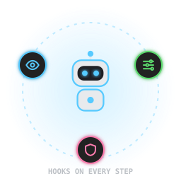
Why
callbacks
Hooks at fixed checkpoints
in the agent run
An agent run is a black box, until you hook in
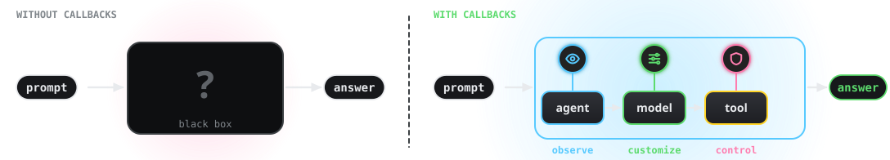
Observe
Log every model request, tool call and result. Trace a whole invocation.
Customize
Edit the prompt, fix tool arguments, reshape a response.
Control
Block unsafe input, skip a tool, serve a cached answer, recover from errors.
Where callbacks fire in one agent run
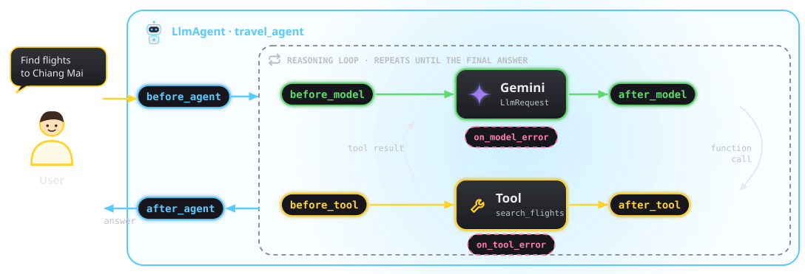
Register callbacks on the agent
from google.adk.agents import LlmAgent
root_agent = LlmAgent(
name="travel_agent",
model="gemini-flash-latest",
instruction="Help users plan trips.",
tools=[search_flights],
before_agent_callback=check_quota,
before_model_callback=[block_pii, log_request],
after_model_callback=add_disclaimer,
before_tool_callback=validate_args,
after_tool_callback=redact_result,
on_tool_error_callback=tool_fallback,
)
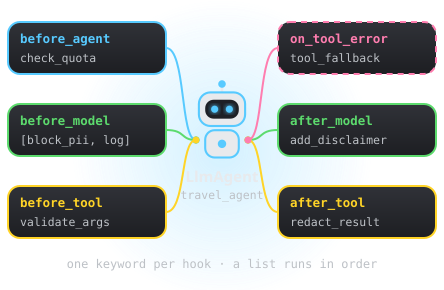
Names must match
ADK passes arguments by keyword. Renamecallback_context to ctx and you get a TypeError.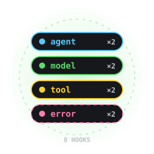
The callback
types
Agent, model, tool
and error hooks
Return None to continue, return an object to take over
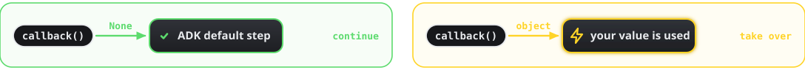
| Callback | Return None | Or return | Effect |
|---|---|---|---|
before_agent | Agent runs | types.Content | Skip the agent. Content is the turn's output. |
after_agent | Nothing added | types.Content | Appended as one extra event after the output. |
before_model | Gemini is called | LlmResponse | Skip the model call. Used as the model's reply. |
after_model | Keep the reply | LlmResponse | Replaces the model's reply. |
before_tool | Tool runs | dict | Skip the tool. The dict is the tool result. |
after_tool | Keep the result | dict | Replaces the tool result. |
on_model_error | Error is raised | LlmResponse | Swallow the error, use this reply. |
on_tool_error | Error is raised | dict | Swallow the error, use this as the result. |
before_agent / after_agent: gate the whole run
from typing import Optional
from google.genai import types
from google.adk.agents.callback_context import (
CallbackContext,
)
def skip_if_paused(
callback_context: CallbackContext,
) -> Optional[types.Content]:
if callback_context.state.get("paused"):
return types.Content(
role="model",
parts=[types.Part(text="Agent is paused.")],
)
return None # run the agent normally
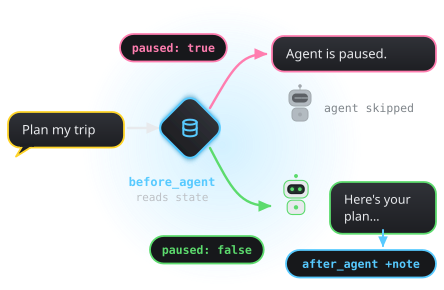
after_agent appends
ReturnedContent is added after the agent output, never instead of it. Works on every agent type.before_model: inspect or block the prompt
from google.adk.models import LlmRequest, LlmResponse
def block_secrets(
callback_context: CallbackContext,
llm_request: LlmRequest,
) -> Optional[LlmResponse]:
last = llm_request.contents[-1]
text = last.parts[0].text or "" if last.parts else ""
if "password" in text.lower():
return LlmResponse(content=types.Content(
role="model",
parts=[types.Part(text="I can't help with that.")],
))
return None # call Gemini as usual
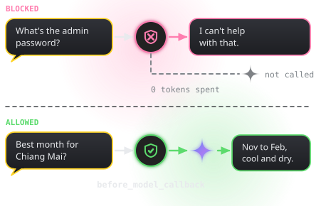
Every LLM call
Runs before each model call in the loop, not once per turn. Or editllm_request in place and return None.after_model: check or rewrite the reply
def add_disclaimer(
callback_context: CallbackContext,
llm_response: LlmResponse,
) -> Optional[LlmResponse]:
c = llm_response.content
if not c or not c.parts or not c.parts[0].text:
return None # tool call or empty: keep it
if "price" not in c.parts[0].text.lower():
return None
c.parts[0].text += "\n\nPrices may change."
return llm_response # replaces the original
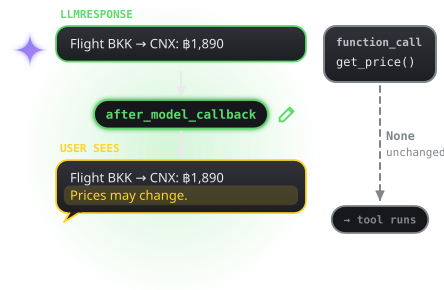
Check the shape
A function-call reply has no text: returnNone. To change what users see, use after_model, not after_agent.before_tool: validate, fix or block a call
from typing import Any
from google.adk.tools.base_tool import BaseTool
from google.adk.tools.tool_context import ToolContext
def validate_args(
tool: BaseTool,
args: dict[str, Any],
tool_context: ToolContext,
) -> Optional[dict]:
if tool.name != "transfer_money":
return None
if args.get("amount", 0) > 10_000:
return {"error": "Over the limit. Ask a human."}
args["currency"] = args.get("currency", "THB").upper()
return None # run the tool with the edited args
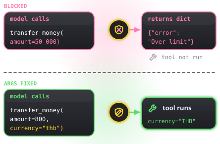
Never return {}
An empty dict still counts as a result and skips the tool. Return None to run it.after_tool: clean the result before the model sees it
def redact_result(
tool: BaseTool,
args: dict[str, Any],
tool_context: ToolContext,
tool_response: Any,
) -> Optional[dict]:
if tool.name != "get_customer":
return None
if not isinstance(tool_response, dict):
return None # non-dict results are wrapped later
clean = dict(tool_response)
clean.pop("national_id", None)
return clean # replaces the tool result
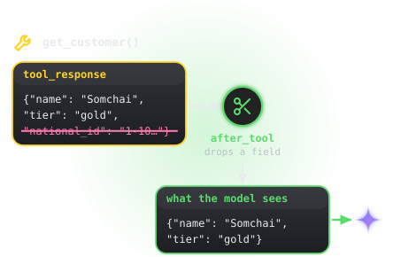
Check the type
ADK wraps a non-dict as{"result": ...} only after this callback runs.on_model_error / on_tool_error: fail gracefully
async def model_fallback(
callback_context: CallbackContext,
llm_request: LlmRequest,
error: Exception,
) -> Optional[LlmResponse]:
logger.warning("model failed: %s", error)
return LlmResponse(content=types.Content(
role="model",
parts=[types.Part(text="Busy now. Try again soon.")],
))
def tool_fallback(tool, args, tool_context, error):
return {"status": "error", "message": str(error)}
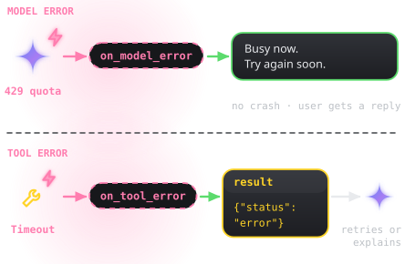
Return None
The exception is raised as usual.on_tool_error does not cover streaming tools.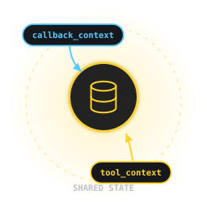
Context
& state
What each callback can
read and write
What the context gives you
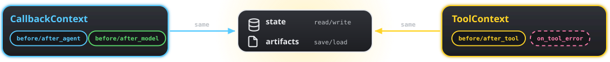
CallbackContext
Agent and model callbacks
ToolContext
Tool callbacks: everything on the left, plus
skip_summarization = TrueCallbacks share data through state
from datetime import date
def limit_tool_calls(tool, args, tool_context):
n = tool_context.state.get("temp:calls", 0) + 1
tool_context.state["temp:calls"] = n
if n > 5:
return {"error": "Too many tool calls this turn."}
return None
def mark_visit(callback_context: CallbackContext):
today = str(date.today())
callback_context.state["user:last_visit"] = today
return None
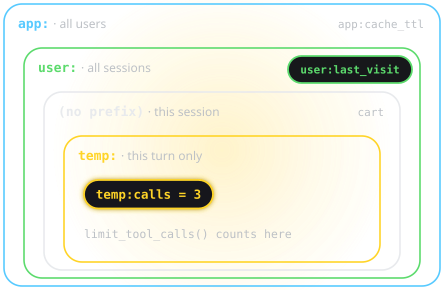
Tracked for you
Writes land inEvent.actions.state_delta. The SessionService saves them.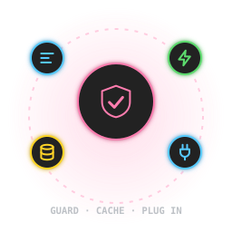
Patterns &
best practices
Guardrails, caching,
plugins
Eight things teams build with callbacks
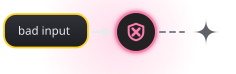
01 · GuardrailsBlock bad input in before_model or bad args in before_tool.
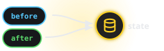
02 · Dynamic stateRead and write context.state across steps.
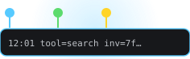
03 · LoggingAgent, tool, invocation id and args at each checkpoint.
Return a stored result, skip the model or tool.
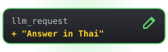
05 · Modify I/OEdit request, response, args or tool result.
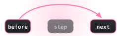
06 · Skip stepsReturn an object from any before_* hook.
Request auth, or skip_summarization.
Save or load files from any context.
Cache a tool with a before / after pair
def _key(tool, args):
return f"cache:{tool.name}:{args.get('symbol')}"
def cache_lookup(tool, args, tool_context):
hit = tool_context.state.get(_key(tool, args))
return hit # dict: skip the tool. None: run it
def cache_store(tool, args, tool_context, tool_response):
tool_context.state[_key(tool, args)] = tool_response
return None # keep the original result
stock_agent = LlmAgent(
...,
tools=[get_stock_price],
before_tool_callback=cache_lookup,
after_tool_callback=cache_store,
)
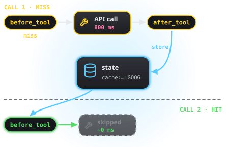
Production
Use Memorystore or another external cache with a TTL instead of session state.Write callbacks that are safe in production
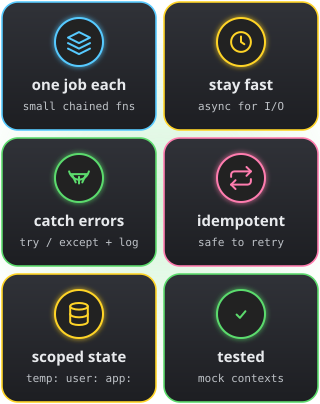
- ✓One job per callback. Chain small functions in a list instead of one big one.
- ✓Stay fast. Callbacks run inline and the agent waits. Use
async deffor I/O. - ✓Catch your own errors. Wrap in try/except and log, so a callback bug never crashes the run.
- ✓Be idempotent. Steps can be retried. Side effects must be safe to repeat.
- ✓Scope state keys. Pick
temp:,user:orapp:on purpose. - ✓Test with mock contexts, then test inside the full agent flow.
- !Return None, not
{}, when you want the tool to run. - !Keep parameter names exactly as documented, or you get a
TypeError.
One agent: callbacks. Every agent: plugins.
from google.adk.plugins.base_plugin import BasePlugin
from google.adk.runners import Runner
class AuditPlugin(BasePlugin):
def __init__(self):
super().__init__(name="audit")
async def before_tool_callback(
self, *, tool, tool_args, tool_context
):
logger.info("tool=%s", tool.name)
return None
runner = Runner(
agent=root_agent,
app_name="shop",
session_service=session_service,
plugins=[AuditPlugin()],
)
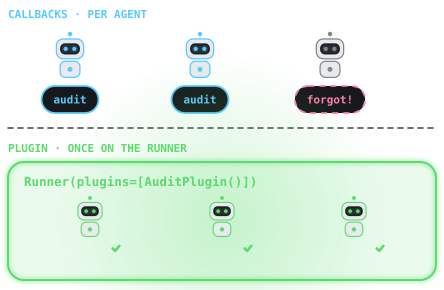
Security policy
The ADK docs recommend plugins for guardrails, so no agent can miss them.Observe, Customize, Control
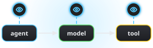
1 · Observe
Hook in at 8 checkpoints. Return None to log, trace and measure without changing anything.
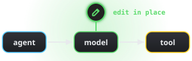
2 · Customize
Edit llm_request, args or results in place. Share data through scoped state.
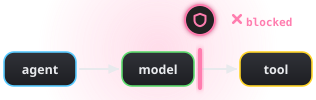
3 · Control
Return an object to block, skip, cache or recover. Move shared policy to plugins.
before_tool_callback that logs every tool call in your agent.Read more and try it
Callbacks overview
adk.dev/callbacksTypes of callbacks
adk.dev/callbacks/types-of-callbacksPatterns & best practices
Callback design patternsPlugins
adk.dev/pluginsSession state
adk.dev/sessions/state
Safety & security
adk.dev/safetyThank you
Q & A
Punsiri Boonyakiat
Google Developer Expert in Cloud AI
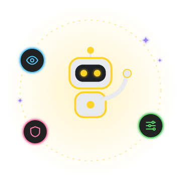